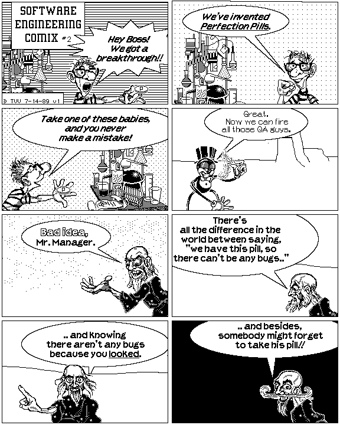

1995-06-23
Suppose the pharmaceutical division of our company invents a pill that prevents people from making mistakes. The programmer who takes this pill won't forget calling sequences, will always remember the right variable name, and so on. He or she does the job perfectly. So we line up everybody in Software and give them a pill. Now, how many people do we need doing software QA?
Well, you still need one.
That person's perfect, right? So only one is needed. But there's all the difference in the world between saying, "Well, we have this pill, see, so we don't need to check..." and saying, "We know there are no bugs in this code because we looked, and looked systematically, and didn't find any."
(Besides, somebody might forget to take his pill.)
You have to have looked.
There is a vast difference in the state of your knowledge between "knowing" because of deduction from things you've been told, or old facts, or common sense, or trust, compared to "knowing" because you looked.

Copyright (c) 1995 by Tom Van Vleck